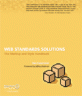
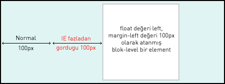
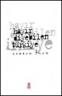
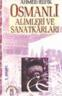

İzin dolayısıyla 1 hafta ara. Bir aksilik olmazsa 1 hafta sonra görüşürüz.
devamını okuWeb Standards Solutions: The Markup and Style Handbook : Dan Cederholm
Web standartlarına en uygun kodlamayı nasıl yaparızın cevabını veren bir kitap. Baş ucu kitaplarından biri. Birinci bölümde genel kullandığımız kodların(ol, li, h1, table, blockquote vd.) web standarlarına en uygun şekilde nasıl kullanmamız gerektiğini çeşitli metodlarla bize gösteriyor. Konu sonlarındaki ipuçlarıda gerçekten çok iyi İkinci bölümde ise yükselen kodlama tekniği ...
devamını okuIE'da İkikat görülen Margin Problemi ve Çözümü
Bir blok-level elemente float değeri ve margin değeri atandığında IE'da sorun yaşarız. Örneğin float:left değeri atanmış bir içerik kutusuna soldan 100px kadar ayırmak istediğinde IE'de soldan 100px olması gereken mesafe 200px görünecektir.

CSS kodu;
.kapsul1 { float: left; width: 150px; height: 150px; margin-left: 100px; }
Bu hataya yanlızca float ...
devamını okuHAYIR DİYEBİLEN TÜRKİYE : Kamran İnan
Türk diplomasi lugatında, maalesef 'Hayır' kelimesi yoktur. İnsanımız dış ilişkilerde Türkiye'nin gür sesini duymaya hasret kaldı. 'Hayır Diyebilen Türkiye' içlerindeki isyanı dışa vuramayan insanlarımızın hislerinin tercümanı. 'Hayır diyebilmek gücü Türk milletinde mevcuttur' diyen yazar, uzun yıllar Türk diplomasisinde ve siyasetinde aktif olarak yer almış bir kişi sıfatıyla, çok önemli ...
devamını okuOSMANLI ALİMLERİ VE SANATKÃRLARI : Ahmed Refik
Osmanlı Uygarlığının temel taşları olan alim ve sanatkarları anlatan eser, Osmanlı'nın son dönem tarihçilerinden Ahmed Refik tarafından hazırlanmıştır. Mimar Sinan'dan, İbrahim Müteferrika'ya zirve şahsiyetlerinin ilginç biyoğrafilerini bu kitapta bulacaksınız. Tarihte olaylar kadar kişilerinde önemini bize hatırlatan ahmet Refik'ten tarih severlerin okuması gereken bir eser. Bir zamanlar ...
devamını okuCSS İpuçları - 10
Css dökümanları içindeki resim yolu css dökümanının konumuna göre verilir. Eklendiği (x)html sayfasının konumuna göre değil.
devamını okuCSS'de Metin(Text) Özellikleri
Font ile Metin(Text) arasında ne fark var ikiside aynı diyorsanız yanılıyorsunuz.
Font özellikleri metni oluşturan karakterlerini nasıl olacağını belirlerken, Metin(Text) özellikleri sayfadaki metinlerin düzenini kontrol eder. Metin özellikleri metin düzeni için çok avantajlı özellikler getirmiştir.
text-indent
Paragrafların ilk cümlelerin soldan içeriye kaydırılması için kullanılan bir özelliktir.
Yapısı : text-indent ...
devamını okuWordPress İpuçları - 4 : Takvim eklemek
WordPress'e takvim eklemek çok basit, zaten bunu için WordPress seçmiyormuyuz. İsteklerimizi basit yoldan karşıladığı için. Takvim eklemek istediğiniz yere aşağıdaki kodu yazmanız yeterli
[sourcecode language="php"]<?php get_calendar() ?>
Türkçe'ye çevirmek için yine Crimson Editörü kullanıyoruz. Peki kodlar nerdemi? wp-includes/locale.php dosyasında
devamını okuCSS Dersleri Bölümü Eklendi
CSS ile ilgili notların sayısı arttıkça takip etmek zor olduğu için CSS'e ayrı bir sayfa açmayı uygun buldum. Üst menüde de gördüğünüz gibi CSS DERSLERİ bölümü eklendi.
devamını okuWordPress İpuçları - 3 : Konuları Sayfalama
 WoprdPress'de girdiğimiz konuların sayfalanması için
sağdaki gibi ne yaptım?
WoprdPress'de girdiğimiz konuların sayfalanması için
sağdaki gibi ne yaptım?http://www.lesterchan.net/portfolio/programming.php buradan eklentiyi indirdim.
Daha sonra pagenavi.php dosyasını wp-content/plugins bölümüne koydum ve admin ekranına gidip aktif ettim.
Daha sonra bu sayfalama bölümünün bulunduğu yere bende index.php(sizde farklı dosyalar olabilir. footer ...
devamını oku